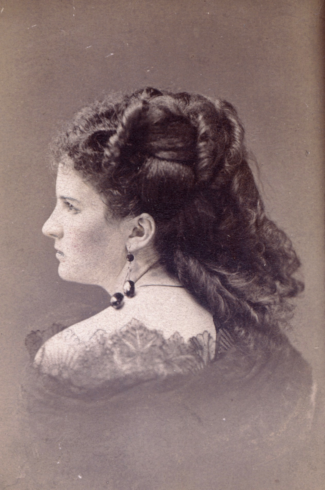

Katherine Chopin (1850~1904) was born in St. Louis and was well-read at a young age. She received her formal education at the St. Louis Academy of the Sacred Heart. Katherine started her literary career after her husband's death in 1884, and she produced a substantial body of work, including the story collections Bayou Folk (1984) and A Night in Acadie (1897) and the classic novella The Awakening (1899), which was criticized for its frank treatment of female sexuality.

Summary and Audiobook
Summary
The main character, Louise Mallard, who has heart disease, was informed that his husband, Brently Mallard was killed in a railroad disaster. The news was received by Richards, one of Brently's friends, and announced by Josephine, Louise's sister. After a great cry, Louise went to her room and refused anyone to follow her. She sat in the chair and tried to figure out the situation and her feeling. Then, she gradually recognized the thing that was getting near her was freedom of both body and soul, and she realized that she did not love her husband. After that, she started to imagine life with freedom and happiness. Meanwhile, Josephine was freaking worried about her and begged her to open the door in case she hurt herself or made herself ill. Therefore, Louise obeyed her and followed her downstairs. At that moment, Brently opened the door and entered in without knowing what was happening or the news of his death. Although Richards did try to screen him from the view of Louise, it was too late. Louise was shocked and died of heart disease, which the doctors said she was killed by joy.
Audiobook
Analysis
The story is a short-short story that conveys the awakening of feminine awareness.
"She could see in the open square before her house the tops of trees that were all aquiver with the new spring life."
The paragraph portrays a lot of scenery of spring from the room of Louise's room window, which symbolizes the bright and free future of Louise
"Monstrous joy:" oxymoron
"When the doctors came they said she had died of heart disease- of joy that kills."
Is it a real joy that killed Louise? Or is it the disappointment of seeing her husband?